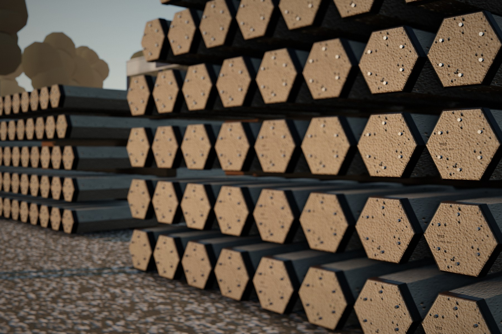

Produção industrial
Moldes metálicos de alta precisão em ambiente controlado garantem padronização dimensional e qualidade superior em cada peça.

Linha de produtos
Elementos estruturais para fundações profundas, fabricados em ambiente industrial controlado, com monitoramento laboratorial contínuo e inspeção individual de 100% das peças.
Características técnicas
Vantagens significativas em relação às soluções moldadas in loco: controle de qualidade rigoroso, rapidez de execução e rastreabilidade total.
Moldes metálicos de alta precisão em ambiente controlado garantem padronização dimensional e qualidade superior em cada peça.
Seções quadrada, circular e hexagonal em comprimentos variados, atendendo às especificações de cada fundação.
Cordoalhas protendidas conferem maior resistência à flexão no transporte, içamento e cravação, e reduzem a porosidade.
Emendas metálicas de alta precisão permitem a união soldada de segmentos, com continuidade estrutural em grandes profundidades.
Especificações por geometria
Selecione a geometria e a bitola para ver a seção em escala, as características geométricas, a capacidade de carga estrutural e baixar o ábaco de interação.
Seletor por carga
Informe a carga de compressão por estaca e veja quais seções atendem pelo limite estrutural da NBR 6118 — e qual é a mais leve entre elas.
Ferramenta de referência. Os valores representam a capacidade estrutural da seção, conforme os ábacos IPR. A carga admissível final depende também da capacidade geotécnica, definida a partir do relatório de sondagem (SPT) e do projeto de fundações. Consulte nossa engenharia.
Orçamento técnico
Fale com nossos especialistas e solicite um orçamento técnico para o seu projeto. Envie a sondagem SPT e as cargas de projeto para agilizar a análise.